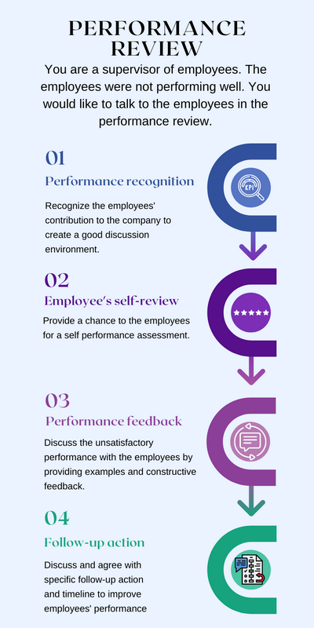

Advocating, Clarifying, and Participating
Advocating
Advocating allows you to develop the confidence to actively support others and be able to understand different perspective. This communication strategy is crucial because it helps the community create a strong bond and build positive relationship with others (Buckley, 2018).
Clarifying
Clarifying makes it easier to convey your intentions and to ensure the listener has received the intended message. Clarification is essential because it reduces ambiguity and misunderstanding of the delivered information (Agochiya, 2018).
Participating
Participating is a communication strategy based on dialogue, allowing the information shared to be communicated clearly, correctly, and without missing details of feedback. This is important because it helps others engage in the conversation and create a better outcome. When you practice participation, everyone is equally involved and feel comfortable to share feedback and opinions (Tufte & Mefalopulos, 2009).
Example
You are a supervisor of employees. During the year-end performance review, the employees were not performing well. In a catch-up meeting, you would like to talk to the employees regarding the performance.
Step 1:
Performance recognition - In the performance review meeting, you can first admire the employees’ efforts in the last year and emphasize the value accomplishments that had a positive impact on the company. This creates a good environment where the employees will feel comfortable.
Step 2:
Employees’ self-review - Ask the employees to comment on their performance. This gives them a chance to review the performance and allows them to recognize any difficulties they’ve encountered during this year.
Step 3:
Performance feedback - Tell the employees that their overall performance has been unsatisfactory. Clarify why the performance is not up to the standard in detail through examples and constructive feedback. This allows the employees to understand the reasons for the under-performance.
Step 4:
Follow-up actions - Discuss and agree with specific steps to improve performance and set a time to follow up to see if things have improved.